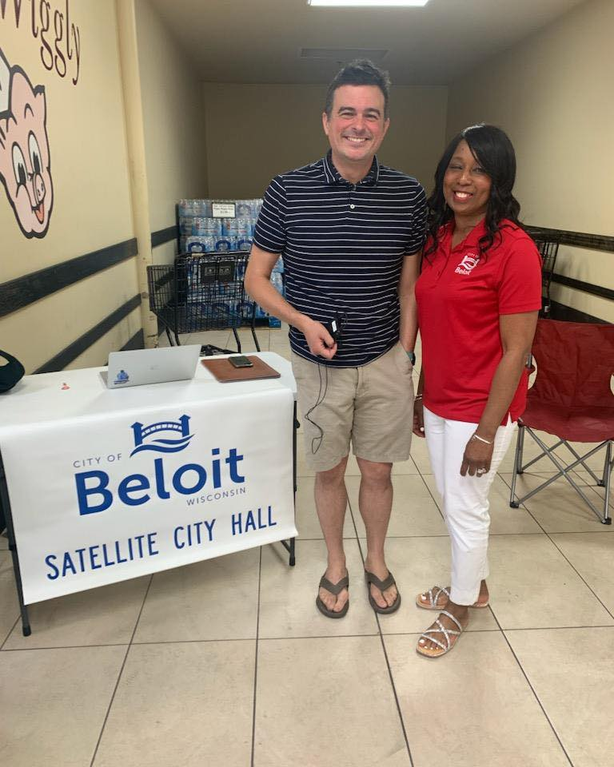
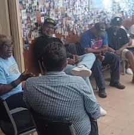
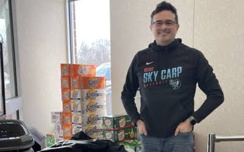
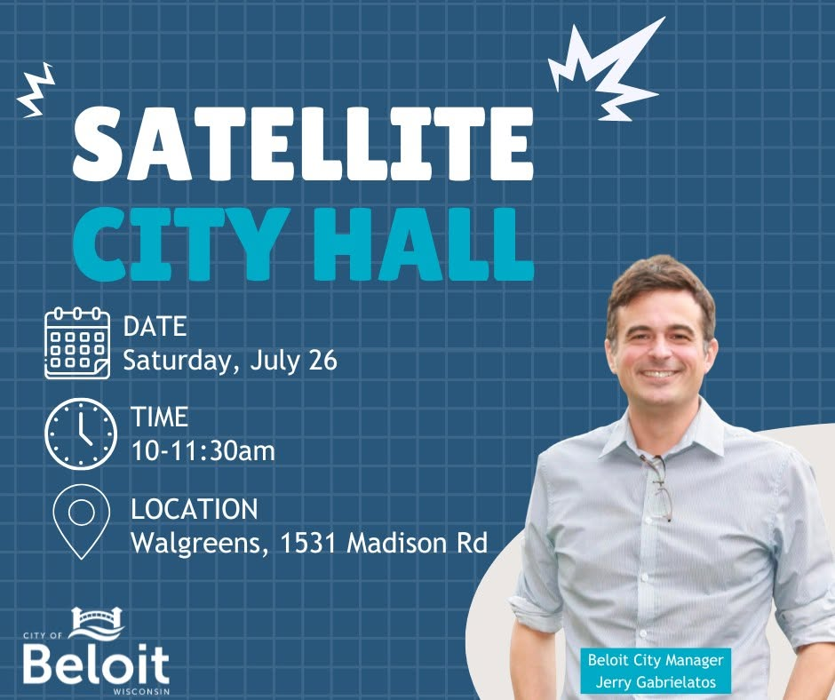

A table, a city banner and a Saturday morning. As city manager, I took City Hall out of City Hall: to grocery stores, a barbershop, a pharmacy, the farmers' market and neighborhood cleanups, so residents could raise a concern, request a service or just get to know the person running their city.

"Gabrielatos deserves praise for seeking out the people. . . . [He] has set an excellent example. Let's see who follows."Beloit Daily News editorial, "Removing barriers for citizen outreach," July 31, 2024 · Read the editorial
Most residents will never come to a council meeting or walk into City Hall. Plenty of them still have something to say. Satellite City Hall flipped the burden: instead of asking residents to come to the city, I went to them, meeting them at the places they were already going.
Some people came on purpose. Others were just running errands and stopped because they saw the banner. Some of those accidental conversations turned out to be the most valuable ones. I met a wonderful mix of people who may not have been comfortable at City Hall, most of whom I would not have met otherwise.
The City announced each session with a simple promise: "City Hall is coming to the people!"
Satellite City Halls were a running part of my tenure with the City of Beloit.
Beloit is one of the most diverse cities in Wisconsin. About 12% of residents are Black and 20% are Latino. A city government that only hears from the people who come to City Hall misses much of that community.
So locations were chosen to reach residents who don't usually show up at City Hall, including a Latino-owned grocery store and a Black-owned barbershop.
Geography mattered too. Residents on Beloit's west side have often felt overlooked by City Hall, so sessions deliberately rotated between both sides of the city. Showing up on the west side, again and again, sent a message that a mailer never could.



Residents who couldn't make a session were pointed to the City's online service request system, so every session also promoted a channel that worked the rest of the year.
At each session I took service requests on the spot and talked with residents about the city. Seeing a city official in person jogs people's memories about something that's been bothering them, sometimes for years.
Potholes, trouble paying bills online, a problem on a specific block. Concerns I wouldn't have heard about if I hadn't set up the table, and that could be routed to staff right away.
Housing, neighborhood conditions and the direction of the city. Hearing both kinds of concerns side by side informed how the city allocated its resources.
A community member once told me I was like a ribbon running through the community. It's perhaps the highest compliment I received in this work, and I earned it one Saturday morning at a time. The owner of one store eventually invited me to his daughter's quinceañera. That doesn't happen because a city sends a translated mailer. It happens because a relationship gets built.
Satellite City Hall was part of a broader effort to build relationships with residents who had historically been underrepresented in city decision-making, including expanding the City's engagement with Beloit's Latino community, roughly a fifth of the city. In 2025, Rock County Administrator John Light began co-hosting sessions, so residents could raise city and county concerns at the same table.
"This is Jerry's superpower, connecting with Beloiters."
"Energetic, creative, open and responsive to citizens."
A model for the next manager.
On Episode 111 of The HaltingWinter Podcast, a show for city managers and local leaders, I talked with host Seth Winterhalter about where Satellite City Hall came from and how it works. Listen to the episode
I started in Chicago politics and the City Council, where constituent service meant going to people, not waiting for them.
I learned the community by going door-to-door to hear resident and business concerns.
When in-person meetings weren't possible, I invited residents to informal video chats or socially distanced coffee.
The full program: recurring, publicized sessions across the city, eventually in partnership with Rock County.
Grocery stores and barbershops reach residents a public hearing never will.
Rotate across neighborhoods and pick places that serve residents City Hall hears from least.
Take service requests and route them, so residents see the conversation lead somewhere.
Residents don't sort their problems by level of government. Co-hosting with the county meant they didn't have to.
Trust builds through repetition. The relationships came from the fifth Saturday, not the first.